➕ New chat실습 시작 전 좌측 상단의 New chat (새 대화창 열기) 버튼을 눌러 깨끗한 새 대화창에서 실습을 시작해 주세요.
1
화면 좌측 하단의 Settings & help > Personalization 메뉴로 이동합니다.
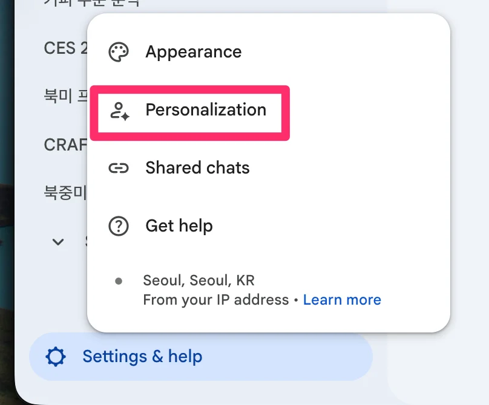
Settings & help > Personalization 메뉴
직무 및 소속 정보 입력
2
직무 정보를 입력합니다. 예시:
선호하는 이름: 홍길동
직무: 롯데백화점 마케팅 기획자
산업군: 백화점 / 유통
3
이전 대화 맥락을 활용할 수 있도록 Conversation history와 Reference saved memories 옵션을 모두 켭니다.
4
Settings & help > Appearance 탭에서 Homepage elements 항목의 퀵 메뉴를 활성화합니다.
Homepage elements 설정
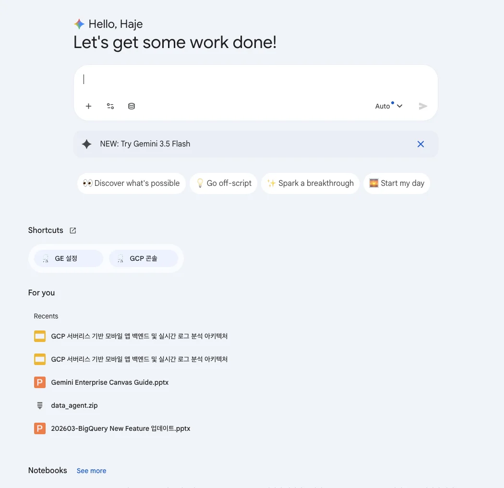
홈 화면 퀵 메뉴 노출 확인
💡 개인화 컨텍스트(pContext)의 작동 원리
Gemini Enterprise는 사용자의 업무 맥락을 파악하여 적절한 답변을 제공합니다. 다음 네 가지 데이터를 바탕으로 개인 맞춤형 문맥을 실시간으로 갱신합니다:
연동된 업무 도구(파워포인트, 엑셀, 사내 포털, 로컬 문서)의 최근 데이터
조직도와 보고 체계 정보
설정에 입력한 프로필(이름, 역할, 직무, 소속 산업군)
최근 대화 기록 및 위치 정보
02
1.2 AI 어시스턴트 활용 및 세션 공유
시장 분석 보고서를 작성하고 팀원들과 안전한 링크로 대화 세션을 공유합니다.
➕ New chat실습 시작 전 좌측 상단의 New chat (새 대화창 열기) 버튼을 눌러 이전 대화와 분리된 새 세션에서 진행해 주세요.
1
대화창에 아래의 역할 기반 프롬프트를 입력하고 실행합니다.
Role Prompt글로벌 럭셔리 백화점 공간 혁신 및 팝업스토어 트렌드 분석
[Role] 너는 10년 차 글로벌 리테일 및 럭셔리 브랜드 마케팅 전문가야.
[Context] 롯데백화점 주요 점포의 프리미엄 공간 리뉴얼과 글로벌 명품 팝업스토어 유치를 준비하며 글로벌 경쟁 지형을 분석 중이야.
[Action] 최근 프랑스, 영국, 일본 등 글로벌 선도 백화점(라파예트, 해롯, 이세탄 등)의 공간 혁신 및 팝업 마케팅 최신 트렌드를 검색하여 요약해 줘. 주요 백화점들의 집객 소구점(Selling Point)과 차별화 전략을 비교하고, 롯데백화점에 적용할 수 있는 전략 인사이트를 제시해 줘.
[Format] 1. 글로벌 리테일 트렌드 3줄 요약, 2. 해외 백화점 혁신 사례 비교 분석표, 3. 롯데백화점 적용 실행 방안 순서로 정리해 줘.
마케팅 트렌드 및 비교표 답변
답변 하단 출처(Source) 검증
2
안전한 세션 공유: 대화 세션 우측 상단의 Share 아이콘을 누르고 Create public link로 생성된 링크를 팀원에게 전달합니다.
우측 상단 Share 메뉴
공유 링크 생성 및 복사
03
1.3 실시간 웹 검색 (Google Search)
구글 검색 그라운딩을 통해 최신 리테일 지속가능 정책과 스마트 매장 기술 동향을 분석합니다.
➕ New chat실습 시작 전 좌측 상단의 New chat (새 대화창 열기) 버튼을 눌러 이전 대화와 분리된 새 세션에서 진행해 주세요.
Search Grounding글로벌 리테일 친환경 정책 및 롯데백화점 SWOT 분석
[Context] 글로벌 유통 및 소비재(Retail) 산업에서 탄소 배출 저감, 제로 웨이스트, 친환경 패키징 및 지속가능 매장 인증 규제가 강화되고 있습니다.
[Action] 글로벌 대형 유통업체들의 최신 친환경·지속가능 매장 운영 사례와 ESG 정책 변화를 검색해 줘. 이러한 친환경 트렌드가 국내 오프라인 백화점 산업에 미칠 영향을 분석해 줘.
[Format] 롯데백화점 관점에서의 SWOT(강점, 약점, 기회, 위협) 분석 매트릭스 표로 정리하고, 최우선 대응 전략 2가지를 제시해 줘.
[Role] 너는 글로벌 유통 테크 수석 애널리스트야.
[Action] 최근 열린 CES 2026에서 발표된 리테일 테크(스마트 쇼핑, 피지컬 AI 기반 고객 동선 분석, 무인 결제, 생성형 AI 퍼스널 쇼퍼) 최신 동향을 웹 검색으로 분석해 줘.
[Format] 1. 핵심 리테일 테크 트렌드 3가지 요약, 2. 글로벌 선도 유통사 적용 사례, 3. 롯데백화점 VIP 고객 경험 혁신을 위한 마케팅 제언 3줄.
04
1.4 Image & Video 생성 실습
텍스트 프롬프트로 고화질 비즈니스 인포그래픽과 홍보용 비디오를 제작합니다.
➕ New chat실습 시작 전 좌측 상단의 New chat (새 대화창 열기) 버튼을 눌러 이전 대화와 분리된 새 세션에서 진행해 주세요.
1) 이미지 생성 실습 (Image Generation)
화면 상단 Tools 패널에서 Create images 도구를 켠 뒤 실행합니다.
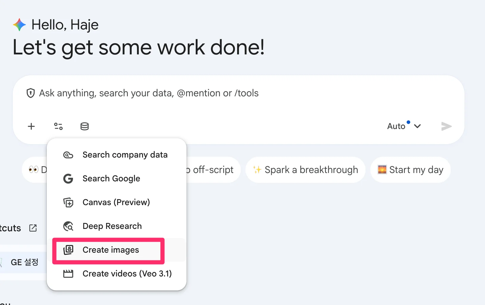
Create images 도구 활성화
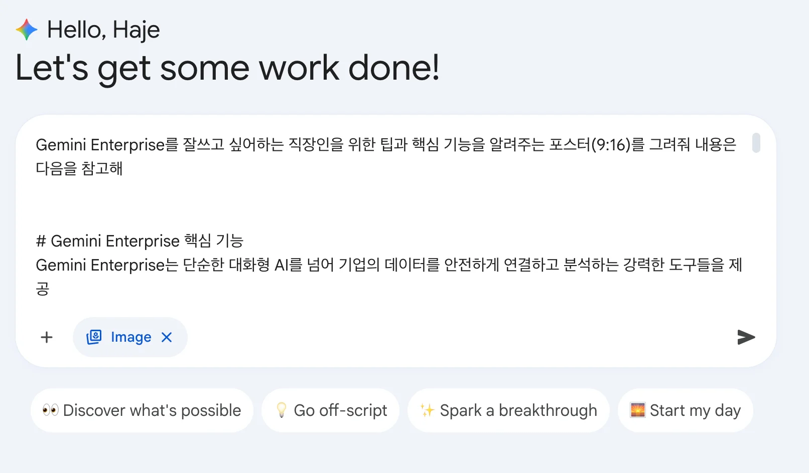
이미지 생성 인터페이스 화면
Image엔터프라이즈 기능 안내 포스터 (9:16)
Gemini Enterprise의 핵심 기능을 설명하는 세련된 인포그래픽 포스터(세로형 9:16)를 그려줘.
포함할 내용:
- AI Assistant & Web Search: 실시간 Google 검색 그라운딩 및 코드 작성
- Deep Research: 다수 소스 자율 분석 및 심층 리포트 작성
- Gemini Notebook: 사내 문서 기반 출처 검증 리서치
- Agent Designer: 노코드 맞춤형 AI 에이전트 구축
- Media Generation: 비즈니스 이미지 및 동영상 즉각 생성
인포그래픽 포스터 예시 1
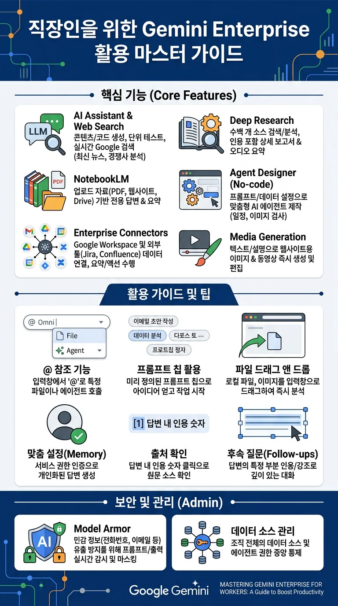
인포그래픽 포스터 예시 2
Image-to-Image손그림 스케치를 클라우드 아키텍처 다이어그램으로 변환
첨부한 손그림 스케치 아키텍처를 Google Cloud 공식 Architecture Icon 스타일을 적용하여 정돈된 고해상도 엔지니어링 다이어그램으로 다시 그려줘.
2) 비디오 생성 실습 (Video Generation)
➕ New chat비디오 생성 실습 전 좌측 상단의 New chat (새 대화창 열기) 버튼을 눌러 이전 대화와 분리된 새 세션에서 진행해 주세요.
대화 입력창의 Tools 패널에서 Create videos (Veo 3.1) 도구를 선택한 뒤 실행합니다.
Create videos (Veo 3.1) 도구 활성화
Video돌리 레프트 샷 럭셔리 향수
향수병을 소개하는 홍보 영상을 만드세요. 호박색 액체가 담긴 유리 향수병의 각진 마개에 초점을 맞춘 클로즈업 돌리 레프트 샷으로 시작합니다. 병 표면에 물방울이 은은하게 맺혀 있고, 흰색 대리석 위에 놓여 있습니다. 배경 창문에서 부드러운 자연광이 흘러들어오며 전체적으로 차분하고 우아한 분위기를 연출합니다.
Video푸드 매크로 슬로우 모션
육즙이 가득한 치즈버거의 매크로 클로즈업 샷.
- 세부 묘사: 녹아내린 치즈가 옆으로 천천히 흐르고 김이 피어오름
- 촬영 기법: 하이 키 조명(high key lighting), 4k 해상도, 슬로우 모션
- 오디오: 지글거리는 소리, 경쾌한 배경음
Video폭포 FPV 드론 샷
거대한 폭포 아래로 빠르게 하강하는 FPV 드론 샷.
- 세부 묘사: 렌즈에 부딪히는 물방울, 안개와 무지개를 통과하며 비행
- 촬영 기법: 역동적인 모션 블러, 자연 다큐멘터리 스타일
- 오디오: 세차게 쏟아지는 물소리, 바람 소리
Video1990년대 레트로 VHS
1990년대 VHS 비디오 스타일. 스케이트보더가 교외 거리에서 카메라 앞을 지나며 올리(ollie) 기술을 선보임.
- 세부 묘사: 손으로 든 카메라의 흔들림, 색 번짐, 날짜 스탬프
- 오디오: 테이프 노이즈, 보드 바퀴 소리
05
1.5 엑셀 파일 분석 (Excel Analytics)
스프레드시트 데이터를 첨부하고 자연어로 질문하여 시계열 차트와 통계 검정을 도출합니다.
➕ New chat실습 시작 전 좌측 상단의 New chat (새 대화창 열기) 버튼을 눌러 이전 대화와 분리된 새 세션에서 진행해 주세요.
💡 엑셀 분석 시 정확도를 높이는 방법
열(Column) 이름이 첫 번째 행에 위치하도록 정리하고, 프롬프트 작성 시 (주문 완료일), (Orders Total Sales)처럼 시트에 적힌 정확한 열 이름을 괄호 안에 명시하면 오류 없이 파싱됩니다.
1단계데이터 구조 파악
업로드한 엑셀 문서의 전체 데이터 구조를 파악하고, 어떤 분석과 인사이트를 도출할 수 있는지 요약해 줘.
2단계시계열 매출 추이 분석
(주문 완료일)을 기준으로 일별, 주별, 월별 매출(Orders Total Sales)의 변화 추이를 분석하여 매출이 가장 높은 시기와 낮은 시기의 특징을 파악해 줘.
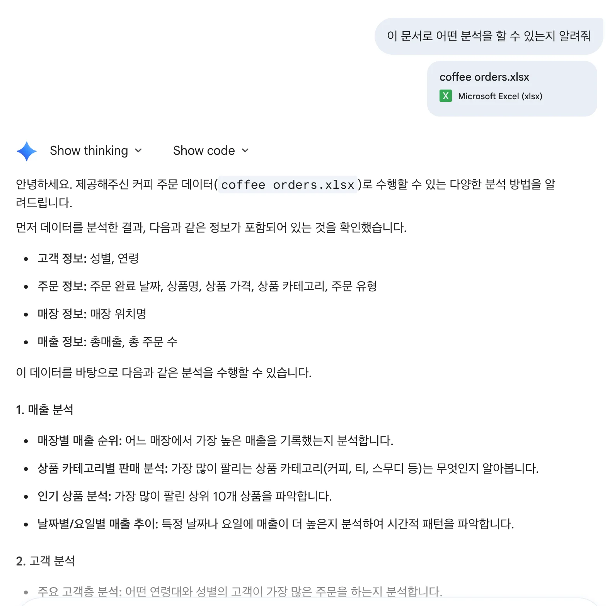
데이터 구조 요약
시계열 차트 생성 결과
3단계주문 유형별 매출 차이 t-test 통계 검정
(주문 유형: Dine-in, Takeaway)에 따른 매출 비중을 분석하고, 매장 식사와 포장 판매 간의 주문당 평균 매출 차이가 통계적으로 유의미한지 t-test 검정을 수행해 줘.
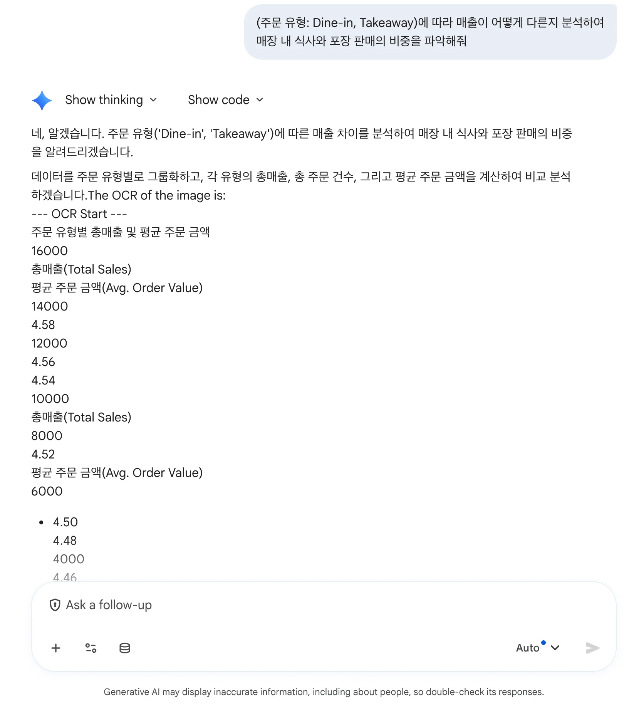
주문 유형별 비중 분석
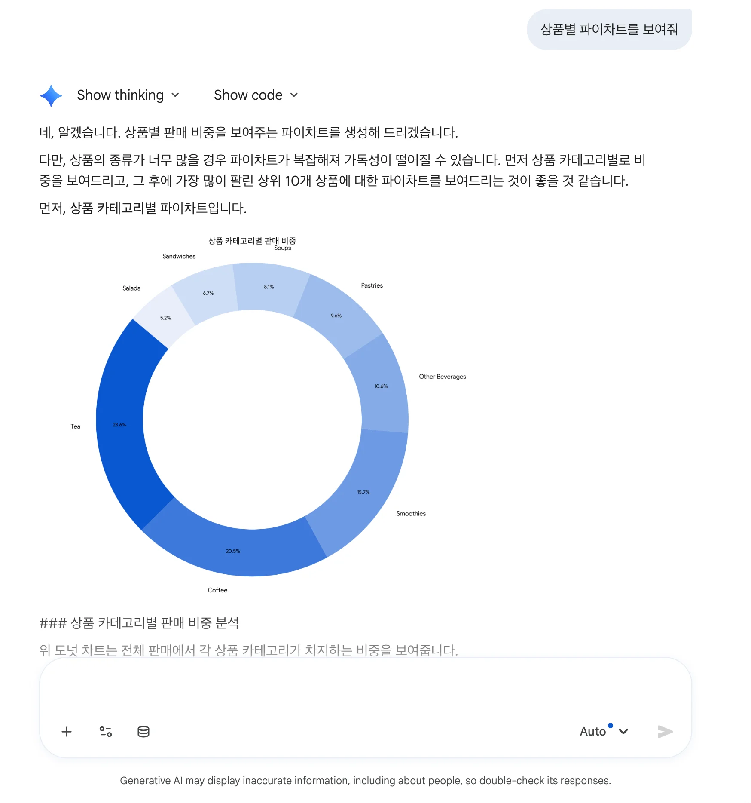
t-test 통계 검정 결과표
06
1.6 PPT 파일 분석 (PowerPoint Analytics)
수십 장의 프레젠테이션 파일을 분석하여 신규 기능 비교표를 도출합니다.
➕ New chat실습 시작 전 좌측 상단의 New chat (새 대화창 열기) 버튼을 눌러 이전 대화와 분리된 새 세션에서 진행해 주세요.
PPTX AnalysisBigQuery 신규 기능 GA/Preview 분류 표 생성
[Role] 너는 10년 차 클라우드 솔루션 아키텍트야.
[Context] 첨부된 보고서는 BigQuery의 최신 기능 업데이트 내역이야.
[Action] 발표 장표에 포함된 New Feature들을 핵심 기능별로 간결하게 요약해 줘.
[Format] 기능명, 핵심 요약, 출시 상태(GA vs Preview 여부)를 세 개 열의 마크다운 비교 표로 작성해 줘.
07
1.7 Canvas (프레젠테이션 & 보고서 자동 생성)
텍스트 요구사항을 바탕으로 비즈니스 프레젠테이션 슬라이드 및 보고서 장표를 자동 생성하고 디자인을 지정합니다. (MS PowerPoint 및 PDF 내보내기 지원)
➕ New chat실습 시작 전 좌측 상단의 New chat (새 대화창 열기) 버튼을 눌러 이전 대화와 분리된 새 세션에서 진행해 주세요.
Canvas PromptGCP 백엔드 아키텍처 슬라이드 요약
새로운 모바일 앱을 위한 백엔드 아키텍처를 GCP에서 처음부터 설계하려고 해. 초기에는 트래픽이 적겠지만, 이벤트 기간에는 10배 이상 늘어날 수 있어서 Auto-scaling이 필수야. 또한 초당 수천 건의 로그 데이터를 실시간 수집·분석할 파이프라인도 필요해. 완전 관리형 서버리스(Serverless) 위주로 인프라를 설계하고 선택 이유를 설명해 줘.
그리고 비즈니스 프레젠테이션 슬라이드 및 보고서 장표로 요약해 줘. (PowerPoint PPTX 및 PDF로 내보내어 사내 보고에 활용할 수 있도록 레이아웃 구성)
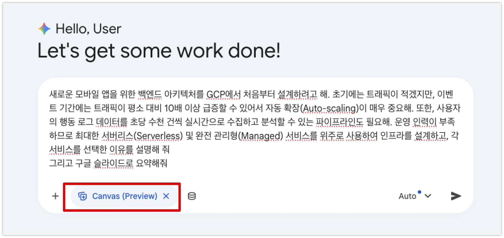
Canvas 모드 선택
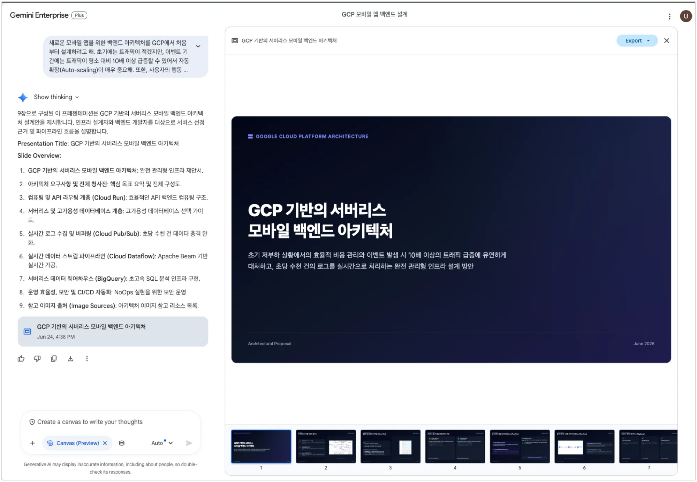
슬라이드 장표 자동 생성
Canvas Style모던 IT 기술 문서 스타일 지정
위에서 작성한 GCP 백엔드 아키텍처 요약 슬라이드를, 흰색 바탕의 깔끔하고 모던한 IT 기술 문서 스타일로 장표 레이아웃을 다시 구성해 줘.
기술문서 스타일 레이아웃 1
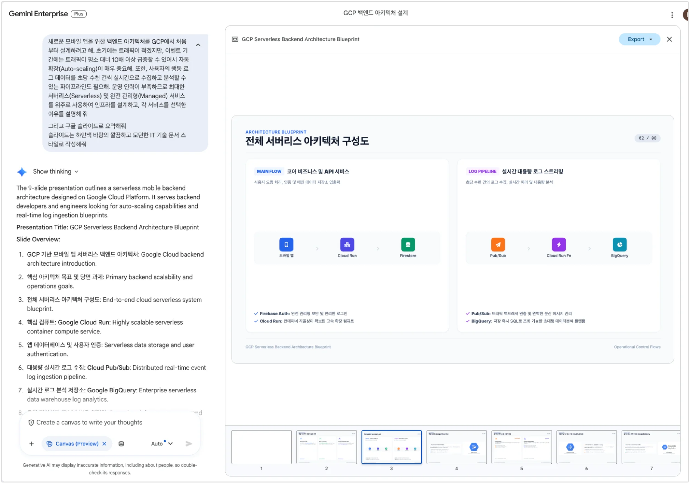
기술문서 스타일 레이아웃 2
08
1.8 프롬프트 작성법 (Prompt Engineering Frameworks)
프롬프트 4대 핵심 구성요소와 실무 표준 프레임워크를 학습합니다.
➕ New chat실습 시작 전 좌측 상단의 New chat (새 대화창 열기) 버튼을 눌러 이전 대화와 분리된 새 세션에서 진행해 주세요.
[Context] 롯데백화점은 점포 경쟁력 강화 및 고객 체류 시간 확대를 위해 백화점 유휴 옥상 및 테라스 공간을 '친환경 웰니스 복합 라이프스타일 가든'으로 전환하는 신규 프로젝트를 추진 중입니다. 목적은 경영진에게 오프라인 공간 혁신과 ESG 경영 실천의 투자 타당성을 제안하는 것입니다.
[Role] 당신은 프리미엄 복합 문화 공간 및 리테일 공간 기획 분야에서 15년 경력을 보유한 롯데백화점 공간기획팀 수석 기획 전문가입니다.
[Action] 경영진 보고용 '백화점 유휴 옥상 공간의 친환경 웰니스 라이프스타일 가든 전환 기획서' 초안을 작성하세요. 고객 체험형 팝업, 친환경 조경, F&B 연계 아이디어가 포함되어야 합니다.
[Format] 1. 사업 개요 및 추진 필요성, 2. 공간 구성 및 단계별 오픈 일정, 3. 예상 방문객 증대 및 투자 대비 매출 효과 예측 모델(표), 4. 친환경 ESG 캠페인 연계 방안 순으로 작성하세요.
[Tone] 경영진 및 점포장 대상 보고이므로 집객 효과와 투자 수익성(ROI)에 초점을 둔 객관적이고 설득력 있는 문체를 유지하세요.
고객경험 / CS고객 불만 및 앱 장애 사과 공지문
[Context] 롯데백화점 봄 정기 세일 첫날 오전 10시부터 12시까지 2시간 동안 롯데백화점 모바일 앱 트래픽 폭주로 인해 '사은행사 모바일 상품권 다운로드 및 L.POINT(엘포인트) 적립/사용' 기능에 접속 지연 및 결제 오류가 발생하여 내점 고객 및 앱 이용 고객 불만이 다수 접수되었습니다.
[Role] 당신은 롯데백화점 고객경험(CX) 혁신 및 CS 커뮤니케이션을 12년간 총괄해 온 고객서비스실장입니다.
[Action] 롯데백화점 모바일 앱 회원 및 방문 고객들에게 공지/발송할 '공식 사과문 및 사은 쿠폰 재지급·보상 대책 안내문' 초안을 작성하세요.
[Format] 공지 제목 옵션 3개 / 도입부(상황 설명 및 원인) / 진심 어린 사과 문구 / 구체적 보상안(사은 상품권 유효기간 연장 및 특별 L.POINT 5,000P 지급 등) / 시스템 안정화 및 재발 방지 대책 순으로 작성하세요.
[Tone] 변명을 철저히 배제하고 고객의 불편에 깊이 공감하는 정중하고 신뢰감 있는 백화점 특유의 품격 있는 문체를 유지하세요.
상품본부(MD) / 마케팅경쟁사 보도자료 분석 및 SWOT 대응 전략 수립
[Context] 주요 경쟁 백화점이 초대형 '프리미엄 미식관(Food Hall) 리뉴얼 및 단독 글로벌 럭셔리 팝업스토어 오픈'을 발표하는 대대적인 보도자료를 배포했습니다. 롯데백화점 상품본부(MD) 및 마케팅팀이 취해야 할 대응 시나리오를 수립하는 것이 목적입니다.
[Role] 당신은 백화점 및 유통 산업에서 10년 이상 상품 기획(MD)과 경쟁사 분석(CI)을 담당해 온 롯데백화점 수석 마케팅 전략 애널리스트입니다.
[Action] 경쟁사 보도자료 및 리뉴얼 내용을 가상 분석하여 롯데백화점 MD/마케팅 조직이 참고할 SWOT 경쟁 대응 보고서를 작성하세요.
[Format] 1. 경쟁사 리뉴얼 핵심 사실 3줄 요약, 2. 경쟁사 전략 대비 롯데백화점 관점의 SWOT 매트릭스 표, 3. 롯데백화점의 F&B/명품 차별화 및 고객 락인(Lock-in) 대응 전략 2가지 제안.
[Tone] 주관적 추측을 배제하고 유통 트렌드와 고객 소비 데이터 관점에 기반한 객관적인 비즈니스 문체를 사용하세요.
IT 시스템 / SRE점포 결제 시스템 장애 사후 분석(Post-Mortem) 보고서
[Context] 주말 피크 시간대(일요일 14:00~16:30) 롯데백화점 전 점포 POS 및 모바일 결제 연동 시스템에서 데이터베이스 스토리지 임계치 초과(Full-Disk)로 인해 L.POINT 적립 및 결제 승인 API 트랜잭션 지연·중단 장애가 발생했습니다.
[Role] 당신은 대형 리테일 옴니채널 결제 시스템 분야에서 15년 이상의 시스템 운영 및 장애 대응을 총괄해 온 롯데백화점 IT/인프라팀 수석 시스템 엔지니어(Principal SRE)입니다.
[Action] 경영진 및 디지털혁신본부장에게 보고할 '점포 결제 및 L.POINT 연동 시스템 장애 사후 분석(Post-Mortem)' 보고서를 작성하세요.
[Format] 1. 장애 개요 및 점포 영향도 타임라인 표, 2. 근본 원인 분석(RCA), 3. 현장 긴급 조치 내역, 4. 스토리지 자동 확장(Auto-scaling) 및 결제망 이중화 재발 방지 대책.
[Tone] 간결하고 직관적인 개조식 엔터프라이즈 기술 보고서 문체를 사용하세요.
✓ Track 1 완료
다음 단계: Track 2. Agentic Value
팀 도서관 구축(Gemini Notebook), Deep Research 심층 리서치, 그리고 노코드 워크플로우 에이전트를 직접 설계하는 Track 2로 이동하세요.
 직무 및 소속 정보 입력
직무 및 소속 정보 입력

 Homepage elements 설정
Homepage elements 설정


{kind=link}